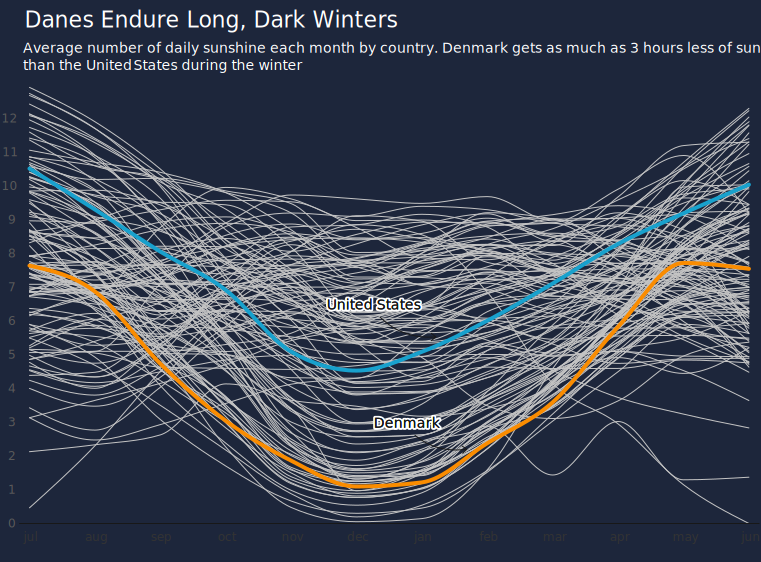
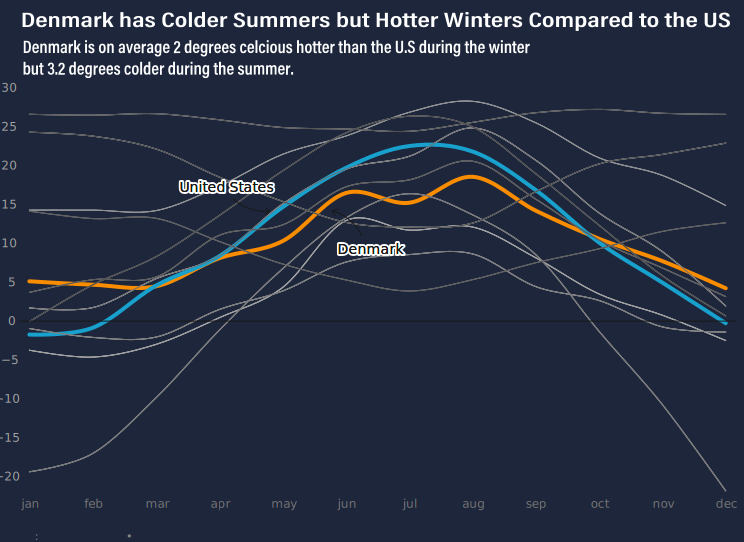
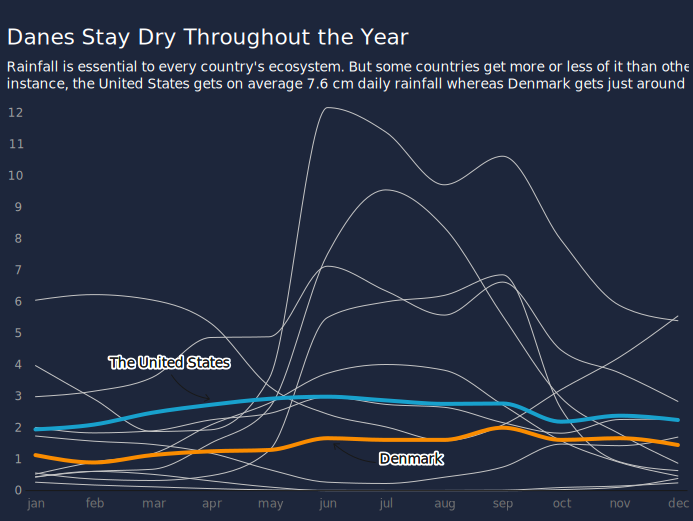

Denmark is happier but also dryer, darker, and colder than the U.S.
Denmark scores as one of the happiest countries in the world, but when it comes to nice weather, the U.S. has it beat.
The idea of perfect weather is highly subjective. But a lot of people like sunshine, warmth and lush greenery. Based on an analysis of U.N. climate data, here’s how Denmark and the United States differ and why Danes may want to consider a trip stateside.
Denmark gets on average 4.5 hours of daily sunlight whereas the U.S. gets a stunning 6.8 hours. The low amount of sunlight is largely due to Denmark’s location near the Warm Gulfstream. If you look at a map, you’ll see that the Gulfstream starts by the Caribbean and makes its way northeast. The winds start off warm because it’s hot in the Caribbean, but when air is hot it can hold a lot of moisture which it picks up on its way to northern Europe. When this warm air reaches Denmark, it’s forced up over the land which cools the air and, tada, condenses into clouds.

The result is that Denmark has much more gloomy weather than the U.S. Still, one should bear in mind that the U.S. is 228 times bigger than Denmark so conditions vary depending on state. Arizona, for instance, gets nearly 12 hours of daily sunshine whereas Washington State gets just 6 hours. But even Washington State manages to outperform Denmark in terms of good weather.
When it comes to comparing temperature, Denmark has chilly winters and comfortable summers. The U.S., on the other hand, is much more bipolar with extremely hot summers and freezing winters. This results in Denmark actually being warmer than the U.S. during the winter but colder during the summer. So which country has the most preferable temperature? It depends. If you want both a white Christmas and also pool-weather during the summer, then the U.S. might be the place for you. But if you want consistent gloomy weather that’s neither really hot nor incredibly cold, then you should settle in Denmark.

Lastly, we’re going to take a look at how much rainfall each country gets. Surprisingly, the U.S. gets much more rain than Denmark, despite also being sunnier. This is because the U.S. has much heavier rainfall than Denmark, so when it rains it really really rains compared to Denmark which has more consistent but lighter rainfall.

To conclude: Choosing between Denmark and the U.S.’s weather is like choosing between your overly hyped friend who experiences a lot of mood swings and your more chill friend who consistently is kind of boring. Personally, I think I’d prefer the former.